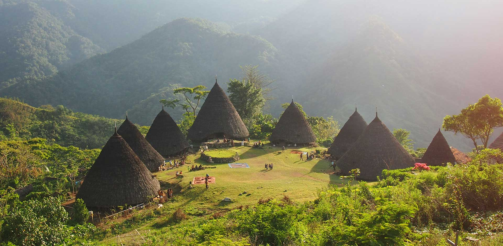
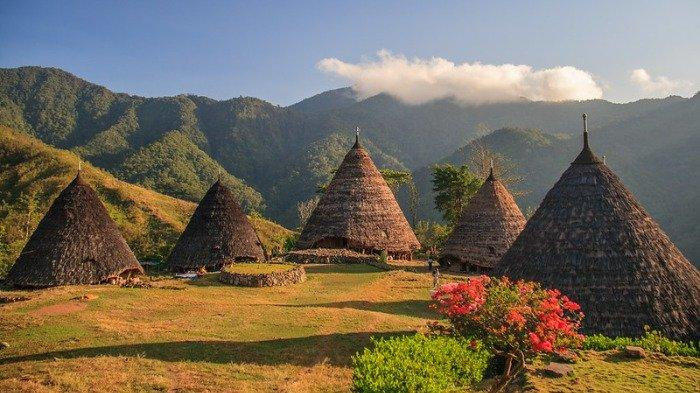
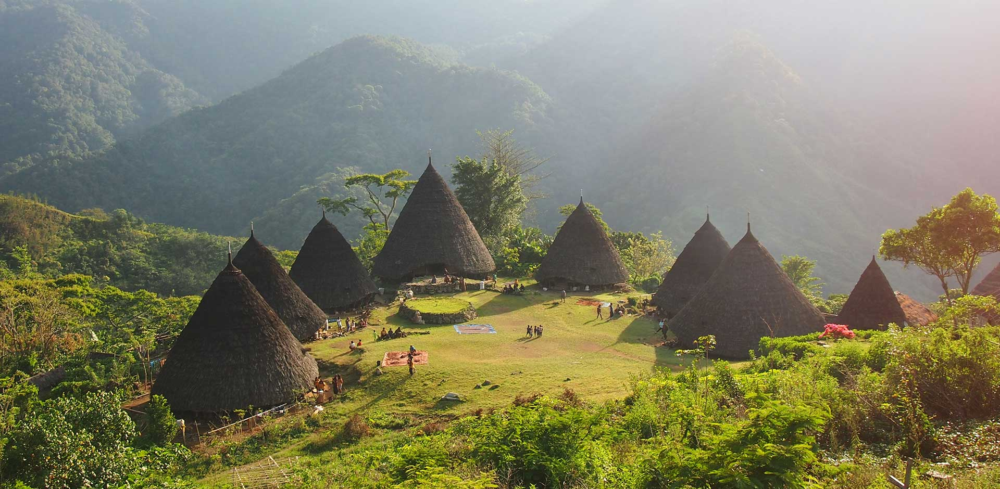
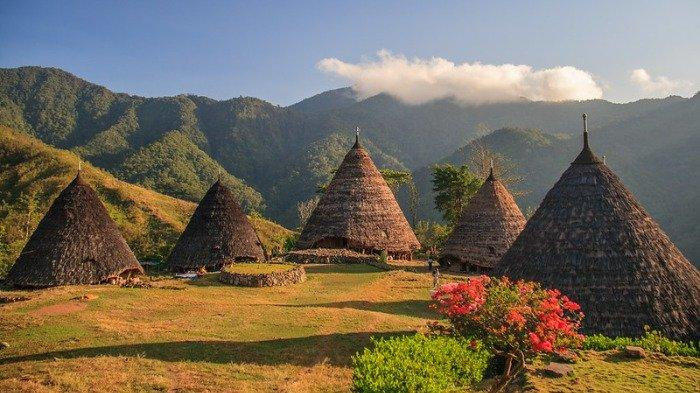

This is WaeRebo
Wae Rebo adalah sebuah desa adat yang terletak di pegunungan Kabupaten Manggarai, Pulau Flores, Nusa Tenggara Timur. Desa ini dikenal dengan julukan "Desa di Atas Awan" karena lokasinya yang tinggi, sekitar 1.100 hingga 1.200 meter di atas permukaan laut, dikelilingi hutan tropis lebat dan pegunungan yang menakjubkan. (Sumber: jadesta.kemenparekraf.go.id, en.wikipedia.org)
Butuh udara segar dan pengalaman otentik? Yuk, trekking ke Wae Rebo! Rumah adat unik, pemandangan luar biasa, dan budaya yang masih hidup menanti kamu di puncak Flores! 🌿🏔️ #Waerebo #ExploreFlores
Enjoy your holiday
Tentang Wae Rebo
Wae Rebo adalah desa adat khas Flores yang terletak di ketinggian, terkenal dengan rumah tradisional Mbaru Niang. Desa ini mempertahankan kehidupan komunitas, upacara adat, dan kearifan lokal yang merefleksikan hubungan harmonis antara manusia dan alam.
Sejarah singkat
Berdiri sejak ratusan tahun lalu, Wae Rebo merupakan pusat budaya Manggarai. Arsitektur Mbaru Niang dibuat secara gotong-royong menggunakan bahan alami seperti kayu dan dedaunan rumbia.
Budaya & Tradisi
Pengunjung akan menemukan keramahan penduduk, tarian adat, serta ritual komunitas. Hormati aturan setempat: minta izin saat memotret, dan ikuti arahan pemandu.
Tips Berkunjung
- Siapkan fisik untuk trekking dan pakaian hangat malam hari.
- Gunakan pemandu lokal dan dukung ekonomi desa.
- Bawa sampah pulang dan hormati adat istiadat.
 


